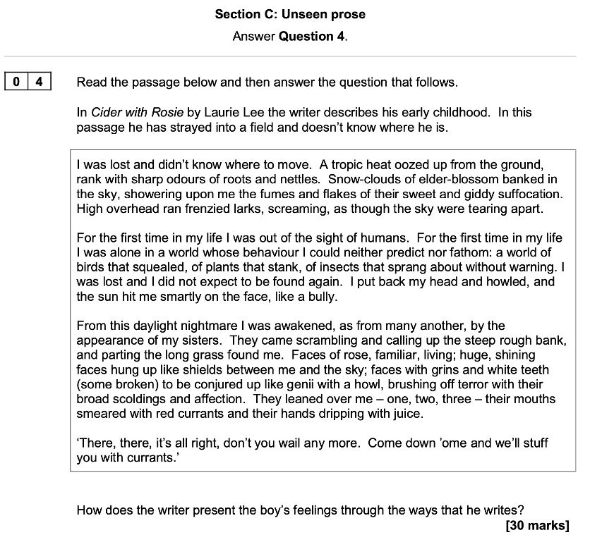
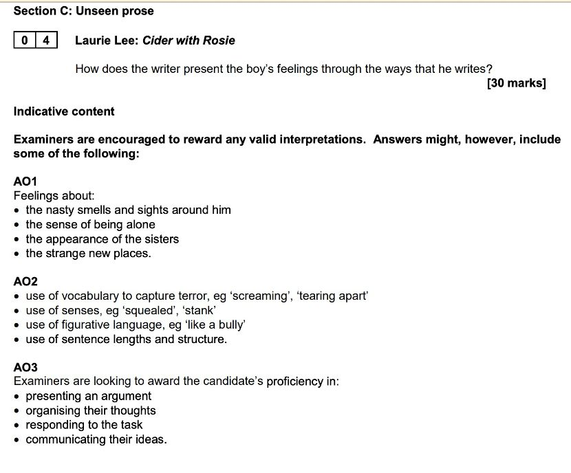
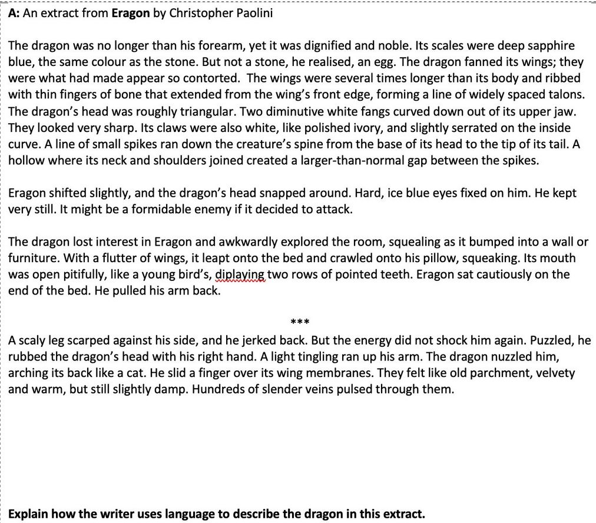
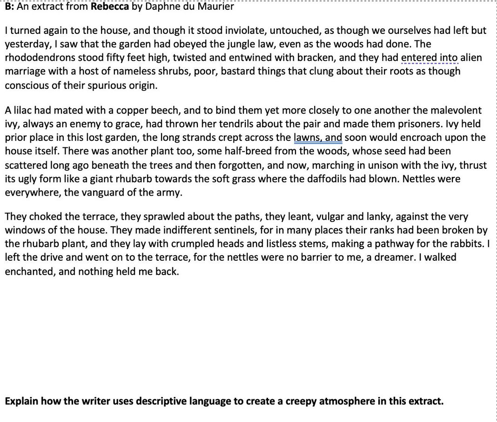
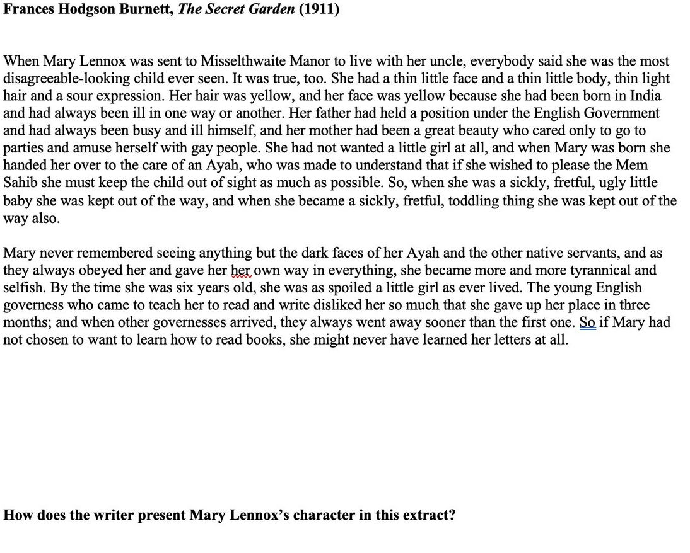
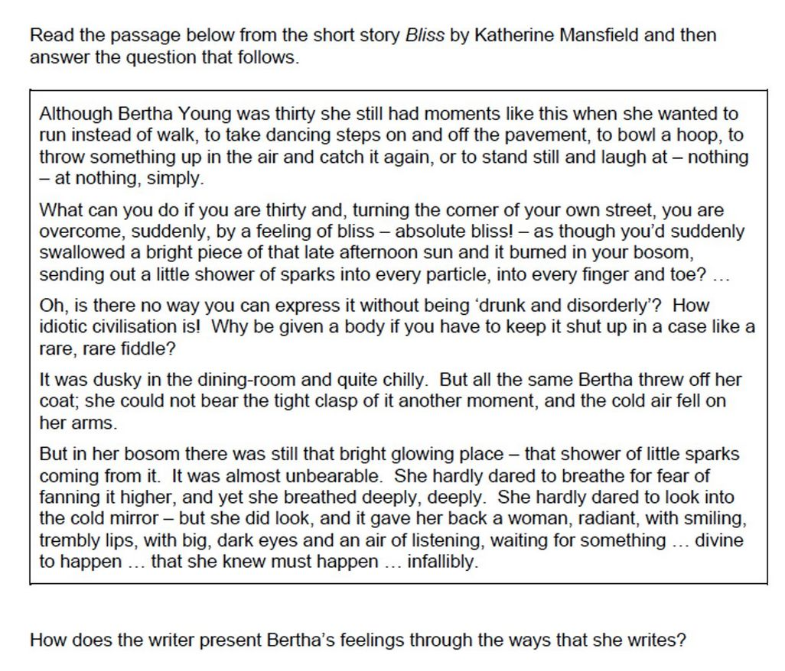
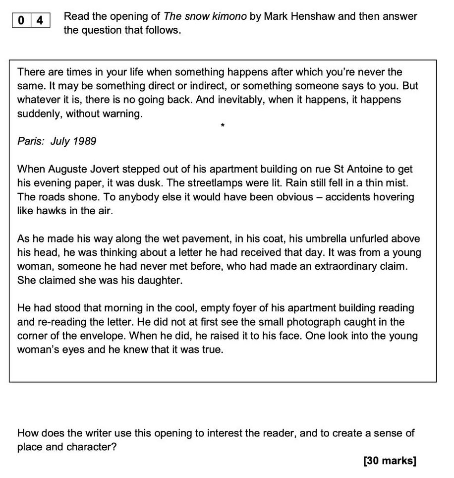

The writer presents the boy’s feelings through a combination of vivid sensory imagery, powerful metaphors, and carefully structured progression that traces his emotional journey from terror to relief.
Initially, the writer conveys the boy’s intense disorientation and fear through overwhelming sensory details. The “tropic heat” that “oozed up from the ground” with “sharp odours” creates a sense of alien hostility, while the “snow-clouds of elder-blossom” with their “sweet and giddy suffocation” suggests how the unfamiliar environment assaults his senses. This sensory overload reflects his emotional distress at being lost.
The writer then deepens the boy’s isolation through repetition and escalating tension. The phrase “For the first time in my life” is repeated to emphasize the unprecedented nature of his solitude, while the description of being “in a world whose behaviour I could neither predict nor fathom” conveys his profound vulnerability. His primal response of putting back his head and howling demonstrates raw emotional terror, with the simile of the sun hitting him “like a bully” reinforcing his feelings of victimization by his environment.
The phrase “daylight nightmare” effectively captures his emotional state, bridging his terrifying experience with the comfort of rescue. The writer presents his sisters’ arrival through transformative imagery - their faces are described as “shields between me and the sky,” positioning them as protectors. The metaphor of them appearing “like genii” with their “broad scoldings and affection” shows how their familiar presence dispels his fear, while their “hands dripping with juice” and faces “smeared with red currants” present a comforting return to the ordinary, childish world.
The sisters’ dialogue at the end, with its colloquial “Come down ‘ome,” completes his emotional journey by restoring normalcy and security. Their matter-of-fact offer to “stuff you with currants” transforms his frightening adventure into a simple childhood incident, demonstrating how quickly terror can dissolve into comfort when surrounded by family.
Through this progression from disorientation to rescue, the writer effectively conveys not just the boy’s immediate feelings but a deeper truth about childhood - how quickly the world can shift from terrifying to secure, and how the presence of loved ones can transform a “daylight nightmare” into merely another adventure.
feedback That’s a strong and clear plan — especially for building a structured, conceptual response. Let’s break down how this approach would align with the top-level AOs (Assessment Objectives) for the Oxford AQA International GCSE English Literature (9275), and how you could sharpen it further.
✍️ Your Structure:
Paragraph 1: Discomfort and unfamiliarity
Technique focus: imagery and simile
🔍 Comment: Excellent place to start — you’re grounding the essay in the initial tone and setting. This allows you to explore:
-
Sensory imagery: “tropic heat,” “oozed,” “sharp odours,” “snow-clouds of elder-blossom”
-
Simile: The sun hitting him “like a bully”
🧠 AO2 Strength: You’ll score highly if you don’t just name these, but explore their emotional and atmospheric effects. How does the simile intensify his sense of alienation?
💡 Pro Tip: Connect to AO1 by linking the discomfort to broader themes of childhood vulnerability or the unfamiliar natural world.
Paragraph 2: Fear and helplessness
Technique focus: repetition and oxymoron
🔍 Comment: This is a perfect midpoint. You’re escalating the emotional journey by focusing on:
-
Repetition: “For the first time in my life” (emphasising novelty and isolation)
-
Oxymoron: “daylight nightmare” (blending the familiar and the terrifying)
🧠 AO2 Strength: These devices show how the writer intensifies emotional conflict — a key Level 6 move.
💡 Pro Tip: Briefly consider structure — the shift from sensation to psychological overwhelm — to hit all aspects of AO2.
Paragraph 3: Relief and safety
Technique focus: contrast in character description and dialogue
🔍 Comment: This contrast is vital — and using dialogue and character description shows a nuanced engagement with writer’s methods.
-
Dialogue like “Come down ‘ome” → natural, grounding, restores safety
-
Visuals of “hands dripping with juice” and “faces smeared with red currants” → tactile, familiar, comforting
🧠 AO2 Strength: This paragraph lets you explore how dialogue, action, and metaphor work together to dissolve the nightmare.
💡 Pro Tip: Comment on narrative focus — how the writer shifts the gaze away from the boy and onto his sisters — this can be read as symbolic of safety: he no longer needs to narrate his distress, they take over.
🎯 Overall Strengths of Your Plan:
✅ Chronological = natural structure
✅ Thematic progression = strong AO1 engagement
✅ Focused on specific writer’s methods = high AO2 potential
✅ Clear arc of emotional development = lets you explore character and perspective with depth (AO3)
🧠 Stretch Suggestions:
To hit Level 6 consistently:
-
Introduce a moment of alternative interpretation once per paragraph — even if just briefly.
E.g., “The simile ‘like a bully’ could also imply that the environment is not just hostile, but overwhelming in a specifically personal way, reflecting a child’s fear of punishment or abandonment.”
-
Link each paragraph to a broader idea about childhood, memory, or family — this helps meet AO1’s call for “themes/ideas/perspectives.”
🏁 Final Thoughts:
This 3-part plan is not just solid — it’s flexible enough for timed writing and it targets all three AOs with clarity. If executed well, it’s easily Level 5 to Level 6 territory, and could score in the 25–30 range with depth and polish.
That’s a brilliant insight — and very common at this level. You’re clearly thinking at a top-band level, but the challenge is verbalising those ideas quickly and clearly in timed conditions.
Here’s how to bridge the gap between your sophisticated thinking and exam-time expression:
🔁 1.
Use Flexible Sentence Starters
To get those deeper insights out fast, pre-learn sentence structures you can plug ideas into under pressure.
🎓 Stretch Sentence Starters:
-
“This suggests not only ___, but also hints at ___.”
-
“The writer could be showing ___ on the surface, yet there is a deeper sense of ___.”
-
“An alternative reading might be that ___.”
-
“This shift in focus from ___ to ___ highlights ___.”
-
“The technique also invites the reader to consider ___.”
🧠 Example:
“The oxymoron ‘daylight nightmare’ not only captures the surreal intensity of the boy’s fear, but also hints at how even familiar environments can feel threatening in moments of emotional overwhelm.”
Write these out with blanks and practice plugging in your ideas during revision. They act like scaffolding for complex ideas.
🧱 2.
Build a Short Bank of Ready-Made Phrases
Have 6–10 “analytical building blocks” you can reuse. For example:
| Idea | Useful Phrase |
|---|---|
| Contrast | “creates a jarring contrast between ___ and ___” |
| Structure shift | “marks a turning point in the emotional tone of the passage” |
| Reader response | “guides the reader toward a feeling of ___” |
| Symbolic description | “may symbolise ___, reinforcing the theme of ___” |
| Voice and perspective | “focuses the narrative lens on ___, which highlights ___” |
Use them as go-to tools to frame your deeper thinking even when you’re under time pressure.
⏱ 3.
Practice Verbalising Thought → Speech → Writing
This sounds weird but saying your analysis out loud before writing helps:
-
Pick a sentence (e.g. “like a bully”) and say out loud:
“Okay, this simile compares the sun to a bully, which shows the environment feels threatening, almost personally aggressive, like a bully would be.”
Now write that exact thing down. You’ll surprise yourself — it’s often easier to speak complex ideas than to write them first. Practise this a few times before your next timed essay.
🧠 4.
Have an AO2 Toolkit Ready (Not Just Technique Names)
Don’t just think “simile = check.” Instead, prepare a mental effects menu:
-
Simile → shows unfamiliarity, exaggerates danger, makes abstract emotion visual
-
Repetition → heightens panic, shows obsessive thought, isolates a key idea
-
Dialogue → grounds the character, reveals tone, shifts emotional atmosphere
-
Narrative shift → changes reader alignment, builds contrast, creates relief/tension
When you see a technique, ask: what is this doing to the reader, or to the emotional tone?
✍️ 5.
Flashwrite With Limits
Practice writing only three sentences per paragraph:
-
Sentence 1: Technique + quote + surface effect
-
Sentence 2: Deeper effect or alternative interpretation
-
Sentence 3: Link to theme or reader response
⏱ Try writing one such mini-paragraph per day. You’ll build speed, confidence, and fluency in turning deep thoughts into crisp analysis.
📘 In Summary:
You’re already noticing the right things. The trick is:
-
Pre-loading some flexible phrases and structures
-
Practising the translation of thought → words under pressure
-
Using short, regular drills to build fluency
Would it help if I created a printable one-page sheet with sentence frames and analysis templates you can revise from?

The writer uses imagery and precise physical descriptions to paint a picture of a lethal dragon. The dragon is described as having ‘sharp’ white fangs, ‘spikes ran down the creature’s spine from its head to the tip of its tail’, ‘pointed teeth’, ‘triangular head’, and ‘hard, ice blue eyes’. Sharp fangs and spikes running the whole length of this baby dragon’s body gives us an impression of its hard, lethal body features, making readers feel that if you get too close, you can get scraped or cut. The dictions of ‘hard’ and ‘ice blue’ have connotations of being cold, menacing, and a disregard of other living beings. The dragon’s body that it is born with features a menacing and able to cause harm look, indicating how dragons are born lethal.
The writer also uses the characters’ actions to describe the dragon. When ‘Eragon shifted slightly’, ‘the dragon’s head snapped around.’, telling us a slight movement would trigger the dragon’s attention and how fast its reaction speed is. The writer uses the word ‘formidable’ to reinforce the lethalness of the dragon, it being still a young and small creature, it still already is a challenge to take on by a grown human. When Eragon sits next to it, he had to ‘s(i)t cautiously’, when the dragon touched him slightly, ‘he jerked back’, showing how Eragon is also alert when the dragon is by him and is scared it might do something to him. By describing the first few interactions of Eragon with the dragon, the writer shows how uneasy it is to sit beside this dangerous creature.
However, the dragon can also be comforting and cute, the writer shows us this by using a simile. The dragon ‘nuzzled him, arching its back like a cat’, comparing the dragon to a domesticated house cat, indicating its gentle and affectionate nature despite its fearsome appearance. The verb ‘nuzzled’ reinforces the dragon’s tenderness of using soft physical touch to seek human attention and affection. Furthermore, through contrasting with previous interactions and with juxtaposing the dragon’s characteristics, the writer shows that even though the dragon possesses dangerous physical features, it is capable of showing warmth and affection like a familiar pet. The author juxtaposes threatening features of ‘sharp’ fangs, ‘formidable enemy’ with vulnerable qualities ‘squealing’, ‘awkwardly explored’. The vulnerable qualities relates to small creatures that are innocent, vulnerable, and newly born. Through maintaining the dangerous nature but also revealing the heart warming gentleness and connection with Eragon, the writer crafts a nuanced portrayal of the dragon that behaves and interacts beyond the usual stereotypes of dragons as purely dangerous, suggesting both its wild, dangerous nature, capacity for companionship, and complexity as a creature.
Feedback and shi
Paolini crafts a complex portrayal of the dragon through skillful use of language techniques, moving from precise physical description to behavioral characteristics that challenge traditional dragon stereotypes. The writer initially establishes the dragon’s threatening nature through carefully chosen descriptive language. The physical description combines precise anatomical detail with threatening imagery: “Two diminutive white fangs curved down out of its upper jaw” and “spikes ran down the creature’s spine.” The adjective “sharp” and the imagery of “polished ivory” claws create an impression of lethal potential, while technical terminology like “triangular” head and “serrated” claws lends scientific authority to the description. Particularly effective is the writer’s use of cold imagery in “hard, ice blue eyes,” where the harsh consonants and temperature associations reinforce the dragon’s potentially dangerous nature.
The writer’s mastery of syntax and pacing intensifies the tension through careful language manipulation. Short, sharp sentences (“He kept very still”) create moments of suspense, while longer, detailed sentences allow for elaborate description. This rhythmic variation mirrors the dragon’s unpredictable nature. The writer also employs dynamic verbs strategically - “snapped around,” “fixed on him” - to convey the creature’s swift, predatory movements, building a sense of potential threat. The descriptive focus moves purposefully from external to intimate observation, with initial passages emphasizing visual details and physical structure, while later descriptions incorporate touch, movement, and emotional response.
However, Paolini skillfully transitions to reveal the dragon’s gentler aspects through contrasting language choices. The shift begins with sound imagery: the dragon “squealing” and “squeaking,” where the softer sounds suggest vulnerability. A pivotal simile compares its mouth to “a young bird’s,” deliberately evoking images of helplessness rather than threat. This transformation continues through tactile descriptions: “felt like old parchment, velvety and warm,” where the sensory detail creates intimacy and warmth, contrasting sharply with the earlier cold imagery. The writer employs dual characterization through parallel descriptions, maintaining the dragon’s inherent dangerous features (“formidable enemy”) while simultaneously revealing its endearing qualities through behavioral descriptions (“awkwardly explored,” “nuzzled him, arching its back like a cat”).
Through this careful orchestration of language techniques - from precise diction to contrasting imagery, from varied syntax to sensory progression - the writer transforms our understanding of the dragon. This sensory progression mirrors Eragon’s growing understanding of the creature, particularly effective in the final description of “hundreds of slender veins” pulsing through the wing membranes, suggesting life, warmth, and vulnerability beneath the fearsome exterior. The description challenges conventional dragon mythology by creating a creature that is simultaneously dangerous and endearing, wild and affectionate, maintaining its fearsome aspects while revealing its capacity for connection and gentleness. The progression from “jerked back” to comfortable physical contact traces the development of trust between dragon and human, ultimately presenting a nuanced portrait where threatening and gentle characteristics coexist.
revised
Paolini crafts a portrayal of a lethal dragon through the use language techniques, moving from precise physical description to behavioral characteristics. The writer initially establishes the dragon’s threatening nature through descriptive language. The dragon is described as having ‘sharp’ white fangs, ‘spikes ran down the creature’s spine from its head to the tip of its tail’, ‘pointed teeth’, ‘triangular head’, and ‘hard, ice blue eyes’. The precise anatomical detail and imagery of sharp fangs and spikes running the whole length of this baby dragon’s body gives us an impression of its hard, lethal body features, making readers feel that if you get too close, you can unintentionally get scraped or cut. Particularly effective is the writer’s use of cold imagery in “hard, ice blue eyes,” where the harsh consonants and temperature associations reinforce the dragon’s potentially dangerous nature. The dragon’s body that it is born with features a menacing and able to cause harm look, perhaps suggesting how all dragons are born a lethal weapon.
The writer also uses the characters’ actions to describe the dragon. When ‘Eragon shifted slightly’, ‘the dragon’s head snapped around.’, telling us a slight movement would trigger the dragon’s attention and how fast its reaction speed is, conveying the creature’s swift, predatory movements, building a sense of potential threat. The writer uses the word ‘formidable’ to reinforce the lethalness of the dragon, it being still a young and small creature, it still already is a challenge to take on by a grown human. When Eragon sits next to it, he had to ‘s(i)t cautiously’, when the dragon touched him slightly, ‘he jerked back’, showing how Eragon is also alert when the dragon is by him and is scared it might do something to him. By describing the first few interactions of Eragon with the dragon, the writer shows how uneasy it is to sit beside this dangerous creature that is inherently predatory.
However, the dragon can also be comforting and cute, the writer shows us this by using a simile. The dragon ‘nuzzled him, arching its back like a cat’, comparing the dragon to a domesticated house cat, indicating its gentle and affectionate nature despite its fearsome appearance. The verb ‘nuzzled’ reinforces the dragon’s tenderness of using soft physical touch to seek human attention and affection. Furthermore, through contrasting with previous interactions and with juxtaposing the dragon’s characteristics, the writer shows that even though the dragon possesses dangerous physical features, it is capable of showing warmth and affection like a familiar pet. The author juxtaposes threatening features of ‘sharp’ fangs, ‘formidable enemy’ with vulnerable qualities ‘squealing’, ‘awkwardly explored’. The vulnerable qualities relates to small creatures that are innocent, vulnerable, and newly born. Through maintaining the dangerous nature but also revealing the heart warming gentleness and connection with Eragon, the writer crafts a nuanced portrayal of the dragon that behaves and interacts beyond the usual stereotypes of dragons as purely dangerous, suggesting both its wild, dangerous nature, capacity for companionship, and complexity as a creature. This sensory progression mirrors Eragon’s growing understanding of the creature, particularly effective in the final description of “hundreds of slender veins” pulsing through the wing membranes, suggesting life, warmth, and vulnerability beneath the fearsome exterior. The progression from “jerked back” to comfortable physical contact traces the development of trust between dragon and human, ultimately presenting a nuanced portrait where threatening and gentle characteristics coexist.

First, the writer uses personification and militaristic imagery to present the plants as an aggressive army staging an invasion. The nettles are described as “the vanguard of the army,” suggesting an organized assault, while plants are portrayed as “sentinels” guarding their conquered territory. This military metaphor creates an unsettling sense that the garden is being systematically overtaken by hostile forces.
Second, the language of forced and unnatural unions creates a disturbing undertone. The rhododendrons have “entered into alien marriage” with “poor, bastard things,” while a lilac has “mated with a copper beech.” The word choice “alien” and “bastard” suggests something unnatural and wrong about these combinations. This is reinforced by the “malevolent ivy” that has “thrown her tendrils” around plants to make them “prisoners,” evoking images of captivity and forced bondage.
Third, the writer employs words associated with decay and degradation to create an atmosphere of corruption. Plants are described as “vulgar and lanky” with “crumpled heads and listless stems.” The repeated use of words suggesting deformity and deterioration (“twisted,” “entwined,” “sprawled”) creates a sense of the garden’s descent into a grotesque state. The description of the “ugly form like a giant rhubarb” thrusting towards where daffodils once grew creates a particularly sinister image of beautiful things being replaced by monstrous ones.
The creepy atmosphere culminates in the narrator’s strange reaction to this scene. Rather than being repelled, they walk “enchanted” through this disturbing landscape, suggesting they too have fallen under the spell of this malevolent transformation. This final detail adds a psychological element to the creepiness, implying that the corruption of the garden might also represent a corruption of the human mind.

Burnett presents Mary Lennox as a spoiled, selfish child through a range of descriptions. Mary is described as having a ‘sour expression’, been given ‘her own way in everything’, and ‘tyrannical’. These descriptions create a vivid image of a child who gets everything they want, the diction of ‘tyrannical’ reinforced this idea by comparing the child to a dictator with an iron fist. Furthermore, ‘Mary never remembered seeing anything but her Ayah and the other servants’, possibly suggesting that Mary does not care about the people around her, and only care about her servants that obey her.
Mary Lennox is also described as an isolated child. Mary ‘was sent to Misselthwaite Manor to live with her uncle’, with a father that ‘had always been busy’, and a mother that ‘had not wanted a little girl at all’. The range of descriptions of her familial relations paints a picture of a neglected child that has no attention from her true parents and had been sent away to a big house that might have nothing inside to provide the paternal or maternal needs or figures she requires. Moreover, the repeated use of ‘she was kept out of the way’ suggests that Mary was seen as a mistake or undesired aspect of her parent’s lives, further emphasizing how isolated and neglected she is. The previously mentioned ‘Mary never remembered seeing anything but her Ayah and the other servants’ can also suggest that she does not meet a lot of people that often, therefore resulting in a lack of true human connection and normal friendships. Overall, from these descriptions of Mary’s life and relations, readers can see that Mary is a lonely child, and can emphasize with her isolation and provide one possible reason to why she is spoiled.
The author also presents Mary as a deterministic child. When each English teacher ‘went away sooner than the first one’, she still orders more to come to continue learning, showing her mindset and yearn to get what she wants and to learn knowledge. The narrator agrees with this by stating ‘So if Mary had not chosen to want to learn how to read books, she might never have learned her letters at all’, suggesting that Mary is determined to learn how to read, and will not stop until she achieves her goal.
Areas for Improvement
Misreading in Final Paragraph: Your interpretation of Mary as “deterministic” misses the text’s meaning. The passage suggests Mary’s education was entirely dependent on her whims - she learned to read only because she happened to want to, not because of determination. The conditional “if Mary had not chosen to want to learn” emphasizes the randomness, not her determination.
Limited Technical Vocabulary: While your analysis is sound, you could enhance it with more sophisticated literary terminology (narrative perspective, characterization techniques, dramatic irony, etc.).
Sentence Construction: Some sentences are overly long and unclear. For example: “The previously mentioned ‘Mary never remembered seeing anything but her Ayah and the other servants’ can also suggest that she does not meet a lot of people that often, therefore resulting in a lack of true human connection and normal friendships.”
Missed Opportunities: You could explore:
- The significance of the colonial Indian setting
- How the narrator’s tone shifts from critical to sympathetic
- The progressive structure showing Mary’s deterioration over time
- The irony in her privileged yet neglected position
Burnett immediately establishes Mary as profoundly unappealing through stark, unflattering description. The opening assertion that “everybody said she was the most disagreeable-looking child ever seen” creates an almost folkloric sense of universal rejection. The repetitive use of “thin” emphasizes her physical frailty, while the description of her “sour expression” and “yellow” coloring suggests both illness and unpleasantness. This harsh opening creates dramatic impact but also establishes Mary as an underdog worthy of sympathy.
Burnett systematically deconstructs Mary’s family situation to explain her character defects. Her father is presented as absent and self-absorbed (“always been busy and ill himself”), while her mother is depicted as vain and neglectful (“cared only to go to parties and amuse herself with gay people”). The stark statement that “She had not wanted a little girl at all” reveals the fundamental rejection that has shaped Mary’s personality.
The description of her failed education reveals both Mary’s willfulness and her isolation. Multiple governesses abandon her, suggesting her difficult nature, but the phrase “So if Mary had not chosen to want to learn how to read books, she might never have learned her letters at all” demonstrates that her education depends entirely on her whims - highlighting the absence of proper guidance and structure.
Burnett’s language becomes increasingly sympathetic as the extract progresses. While opening with harsh judgment, phrases like “kept out of sight as much as possible” and “kept out of the way” emphasize Mary’s rejection and abandonment rather than her failings. The final conditional statement about her literacy creates sympathy by showing how her development has been left entirely to chance.
The third-person omniscient narrator adopts a tone that is simultaneously critical and explanatory. While the narrator doesn’t excuse Mary’s behavior, they provide crucial context that explains her character flaws. The phrase “It was true, too” confirms the harsh judgment but signals that deeper explanation will follow, creating a balanced perspective that neither condemns nor excuses. The colonial setting adds another layer of dysfunction. Mary’s upbringing by “an Ayah” in India, where servants “always obeyed her and gave her her own way in everything,” explains her tyrannical behavior as a product of inappropriate power dynamics rather than inherent evil.
revised
Burnett presents Mary Lennox as a profoundly spoiled and tyrannical child whose behavior stems from systematic neglect and inappropriate power dynamics. Mary is described as having a “sour expression” and being “tyrannical and selfish,” with the diction of “tyrannical” comparing the child to a dictator with absolute power. The text reveals that servants “always obeyed her and gave her her own way in everything,” creating a child accustomed to unchallenged authority. However, Burnett simultaneously provides sympathetic context through the brutal honesty that “everybody said she was the most disagreeable-looking child ever seen” - the universal rejection implicit in “everybody said” suggests Mary’s unpleasantness is both genuine and pitiable. The repetitive description of her as “thin” and “yellow” emphasizes her physical frailty, making her tyrannical behavior seem more like the desperate control-seeking of a powerless child than genuine malice.
Mary’s isolation forms the emotional core of her characterization, with Burnett systematically revealing the abandonment that has shaped her personality. She “was sent to Misselthwaite Manor to live with her uncle” after experiencing profound parental rejection - her father “had always been busy and ill himself” while her mother “had not wanted a little girl at all.” The repeated phrase “she was kept out of the way” emphasizes how Mary was treated as an unwanted burden rather than a beloved child. Furthermore, “Mary never remembered seeing anything but the dark faces of her Ayah and the other native servants,” suggesting she lacks meaningful human connections beyond those obligated to serve her. This isolation explains her inability to form normal relationships and her dependence on subservient figures who cannot provide genuine emotional guidance or boundaries.
The colonial Indian setting adds crucial context to Mary’s character development, while Burnett’s narrative technique shifts from critical to increasingly sympathetic. The power dynamics of colonial India, where a white child holds authority over adult servants, created an unnatural environment that corrupted Mary’s development from infancy. Her education reflects this dysfunction - multiple English governesses “went away sooner than the first one” because they “disliked her so much,” yet her learning depends entirely on her whims. The conditional statement “So if Mary had not chosen to want to learn how to read books, she might never have learned her letters at all” reveals the randomness of her development rather than determination, emphasizing how her upbringing lacked proper structure or guidance. Through this carefully structured revelation, Burnett transforms initial revulsion into understanding, presenting Mary as a product of colonial privilege and systematic failure rather than inherent wickedness, establishing her as a character whose flaws are comprehensible and potentially redeemable.

The writer uses dynamic verbs and actions to show Bertha’s barely contained physical energy. She “wanted to run instead of walk, to take dancing steps on and off the pavement, to bowl a hoop.” This list of childlike actions creates a sense of spontaneous joy and playfulness, despite her being thirty years old. The contrast between her age and these youthful impulses emphasizes the extraordinary nature of her emotional state.
The writer employs an extended metaphor comparing Bertha’s feelings to swallowing the sun: “as though you’d suddenly swallowed a bright piece of that late afternoon sun and it burned in your bosom, sending out a little shower of sparks into every particle.” This imagery of internal light and warmth effectively conveys both the intensity and the all-encompassing nature of her bliss. The metaphor continues throughout the passage with “that bright glowing place” and the description of her as “radiant,” creating a consistent thread of luminous imagery that mirrors her inner joy.
Through rhetorical questions like “Oh, is there no way you can express it without being ‘drunk and disorderly’?” and “Why be given a body if you have to keep it shut up in a case like a rare, rare fiddle?”, the writer reveals Bertha’s frustration with social constraints. These questions highlight the tension between her intense emotional experience and society’s expectations of proper behavior, emphasizing how overwhelming her feelings are.
The writer contrasts external cold with internal warmth to heighten the sense of Bertha’s inner joy. In the “dusky” and “chilly” dining-room, Bertha removes her coat because she “could not bear the tight clasp of it another moment.” This physical discomfort with constraint symbolizes her emotional state bursting beyond normal boundaries. The contrast between the cold air on her arms and the “bright glowing place” in her bosom emphasizes the intensity of her internal feelings.
The climactic moment with the mirror creates a powerful image of Bertha’s transformed state. The writer presents her hesitation (“She hardly dared to look”) followed by the revelation of seeing herself as “radiant, with smiling, trembly lips, with big, dark eyes and an air of listening, waiting for something… divine to happen.” This description combines physical appearance with emotional anticipation, suggesting Bertha sees herself as someone on the cusp of transcendent experience.
The writer varies sentence structure to mirror Bertha’s emotional state. Short, exclamatory phrases convey her bursts of feeling, while longer, flowing sentences with multiple clauses capture the overwhelming nature of her bliss. The use of ellipses (“waiting for something… divine to happen… that she knew must happen… infallibly”) creates a sense of breathless anticipation that mirrors Bertha’s emotional state.

The writer presents Charlie’s love for chocolate through a series of vivid contrasts and carefully crafted descriptions that emphasize both his desperate desire and his patient appreciation for the rare treat. The passage begins by establishing the stark contrast between Charlie’s meager daily diet of “cabbage and cabbage soup” and his longing for chocolate, immediately highlighting how precious and significant chocolate is to him.
The writer uses sensory imagery and physical actions to show the intensity of Charlie’s desire. When passing shop windows, he would “stop and stare and press his nose against the glass, his mouth watering like mad.” This visceral description of his physical reaction demonstrates how chocolate affects him on a fundamental level. The phrase “pure torture” emphasizes the emotional pain of seeing other children “munching them greedily,” creating a poignant picture of his deprivation.
The writer reveals the depth of Charlie’s love through his ritualistic treatment of his annual birthday chocolate. His careful placement of it in “a small wooden box” and treating it “as though it were a bar of solid gold” elevates the chocolate from mere candy to something sacred. The detailed description of how he makes the chocolate last - taking “tiny” nibbles and letting “the lovely sweet taste spread out slowly over his tongue” - shows both his self-discipline and his ability to find immense pleasure in even the smallest amount.
Through carefully chosen diction, the writer builds the emotional significance of chocolate in Charlie’s life. Words like “desperately,” “longed,” and “tortured” emphasize the intensity of his feelings, while the phrase “marvelous birthday mornings” suggests how this rare treat transforms ordinary moments into magical occasions. The writer also creates dramatic tension by hinting at “the one awful thing that tortured little Charlie… more than anything else,” building to the revelation of the chocolate factory’s proximity to his home.

The thought provoking opening statement with direct address “There are times in your life when something happens after which you’re never the same.” immediately draws the reader into the text and makes them wonder about this statement. The use of “never the same” with direct address creates a sense of intimacy and urgency, suggesting that the following events will be significant and transformative, connecting to both the reader’s life and perhaps the character in the story that is to follow.
The sentence of “To anybody else it would have been obvious - accidents hovering like hawks in the air” also intrigues the reader. This makes readers wonder why the narrator is not aware of the accidents, and why they are described as “hovering like hawks in the air.” The simile suggests a sense of danger and foreboding, creating an ominous tone that sets the stage for the events to come.
The suspense is further reinforced with the use of short sentences throughout the opening. “Rain still fell in a thin mist. The roads shone.”, “She claimed she was his daughter”, “When he did, he raised it to his face”, these sentences create an atmosphere of tension and anticipation for what is to come. The use of short sentences also creates a sense of urgency, as if the events are unfolding quickly, in the present and also in the flashbacks of the past. and the reader must keep up.
Analysis: “The Snow Kimono” Opening - Creating Interest, Place, and Character
How the Writer Interests the Reader
Intriguing Opening Statement Henshaw immediately hooks the reader with the philosophical observation about life-changing moments: “There are times in your life when something happens after which you’re never the same.” This universal truth creates instant engagement as readers reflect on their own transformative experiences.
Mystery and Suspense The writer creates compelling questions that drive reader interest:
- What is this “extraordinary claim” from the unknown woman?
- Why does she claim to be Auguste’s daughter?
- What will Auguste do with this revelation?
Dramatic Revelation Structure The narrative builds tension through delayed revelation - we learn about the letter first, then the claim, and finally the photograph that confirms the truth. This creates a satisfying “reveal” that maintains reader engagement.
Creating a Sense of Place
Atmospheric Weather Description Henshaw establishes mood through meteorological details: “it was dusk. The streetlamps were lit. Rain still fell in a thin mist. The roads shone.” This creates a noir-like atmosphere suggesting uncertainty and change.
Specific Geographical Anchoring The precise location “rue St Antoine” and time “Paris: July 1989” immediately establish setting, giving readers clear spatial and temporal coordinates.
Sensory Environmental Details The writer uses tactile imagery (“wet pavement”) and visual details (“accidents hovering like hawks in the air”) to create an immersive urban landscape that feels both beautiful and ominous.
Architectural Context References to “apartment building” and “foyer” establish the domestic, middle-class Parisian setting, grounding the character in a specific social context.
Creating a Sense of Character
Physical Characterization Auguste is established through concrete details: “in his coat, his umbrella unfurled above his head” - presenting him as methodical and prepared, suggesting an orderly personality.
Behavioral Patterns His routine of “get his evening paper” and careful re-reading of the letter reveals someone who is habitual, thoughtful, and perhaps cautious in decision-making.
Emotional State Through Action The writer shows Auguste’s internal conflict through physical actions - standing in the “cool, empty foyer” repeatedly reading the letter demonstrates his shock and need to process this revelation.
Moment of Recognition The climactic moment “One look into the young woman’s eyes and he knew that it was true” reveals Auguste as someone who trusts his instincts and can recognize truth when confronted with it.
Psychological Depth The narrative structure - moving from the general philosophical statement to Auguste’s specific situation - suggests he’s experiencing exactly the kind of life-changing moment described in the opening, creating psychological coherence.
Literary Techniques Employed
Narrative Structure: The text moves from universal to particular, creating thematic resonance Symbolism: The rain and dusk suggest transition and uncertainty Foreshadowing: The opening statement prepares readers for Auguste’s transformation Selective Detail: The photograph detail is strategically delayed for maximum impact Free Indirect Discourse: We access Auguste’s thoughts and perceptions directly
The opening successfully establishes an atmospheric Parisian setting while introducing Auguste as a methodical man facing an unexpected revelation that will fundamentally alter his understanding of his life. The combination of philosophical weight, urban atmosphere, and personal drama creates compelling reader engagement.